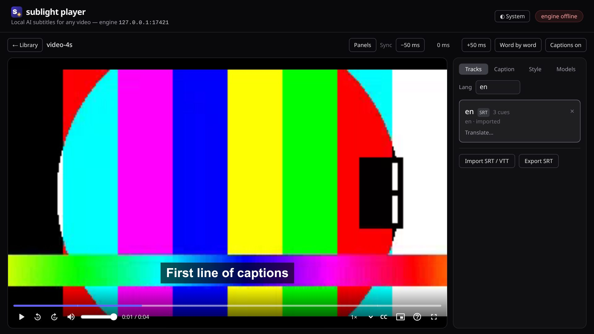

Any video on the web
YouTube, Vimeo and any site that plays a video, embedded players included. Captions appear on the video itself, ahead of playback where the site allows, live otherwise.
sublight listens to a video and writes its subtitles, timed to the word, in the language you choose. On YouTube and any site with a video, and on the files on your disk. The speech recognition and translation run on your own machine: nothing is uploaded, ever.

YouTube, Vimeo and any site that plays a video, embedded players included. Captions appear on the video itself, ahead of playback where the site allows, live otherwise.
The Sublight Player plays the videos on your disk, or takes over a web page's video in one click, with every feature: captioning, translation, styles, export.
Speech in about a hundred languages becomes text. English comes straight from the audio; other languages from a translator that keeps the meaning, not just the words. Show the original and the translation together to learn.
Every word carries its own timestamp, so captions land when it's spoken: 77 ms median error over a 30-minute film. Word by word, or whole sentences.
The models run on your computer. Audio, transcripts and what you watch never leave it. Open-source models, downloaded once from pinned sources and checked.
VLC's keyboard and YouTube's gestures: double-click to skip 10 s and keep tapping for more, hold for 2×, frame steps, A–B loops, screenshots, a queue, light and dark.
With an NVIDIA graphics card the models use it; without one, they run on the processor.
Everything talks over 127.0.0.1, never the internet, except to fetch the
video you're watching.
Linux for now (x64 or ARM), with Brave, Chromium, Chrome, Vivaldi or Edge.
In a terminal:
curl -fsSL https://github.com/ABakdi/sublight/releases/latest/download/install.sh |
bash
It installs the engine, the Player and the speech model into
~/.sublight, and the CUDA toolkit if you have an NVIDIA card. It asks
before installing anything with sudo. Run it again to update;
--uninstall removes it.
Open brave://extensions (or chrome://extensions), switch on
Developer mode, click Load unpacked and choose
~/.sublight/extension. Once.
On any page with a video, click the sublight icon, then Caption this video. The engine starts by itself.
Chromium browsers install packed extensions only from their web store, and sublight isn't published there yet. Developer mode lets the browser load the extension from the folder the installer puts it in. Keep it on.
No. With an NVIDIA card the models run on it and are several times faster; without one they run on the processor. You can choose in the extension's Settings → Developer mode.
About 2 GB for the engine and the speech model, and 2.5 GB more for the translator, downloaded the first time you translate into a language other than English.
No audio, transcript or history. The engine fetches the video you're watching from its site, as your browser does, and downloads the models once. That's all.
Run the installer with --uninstall (add --purge to delete the
models too), then remove the extension from the browser's extensions page.